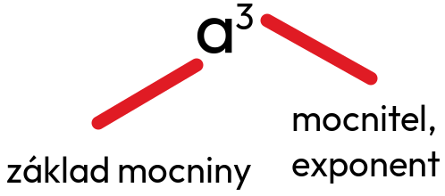

Třetí mocnina čísla je matematická operace, při které číslo vynásobíme samo sebou třikrát. Například třetí mocnina čísla 4 je 4³ = 64. Tato operace se často používá při výpočtech objemů těles, jako jsou krychle. Třetí mocnina je důležitá pro různé aplikace v algebře a geometrii.
a × a × a = a³ - „á na třetí“

mocnitel - kolikrát násobím číslo samo sebou
základ - číslo, které
umocňuji
Třetí mocnina záporného čísla je vždy záporná.
(-7)³ = -7 × (-7) × (-7) = -343
Pozor!
(-2³) ≠ -2³
(a + b)³ ≠ a³ + b³
8000³
8000³ = 512 000 000 000
0,06³
0,06³ = 0,000216
1,3³
1,3³ = 2,197